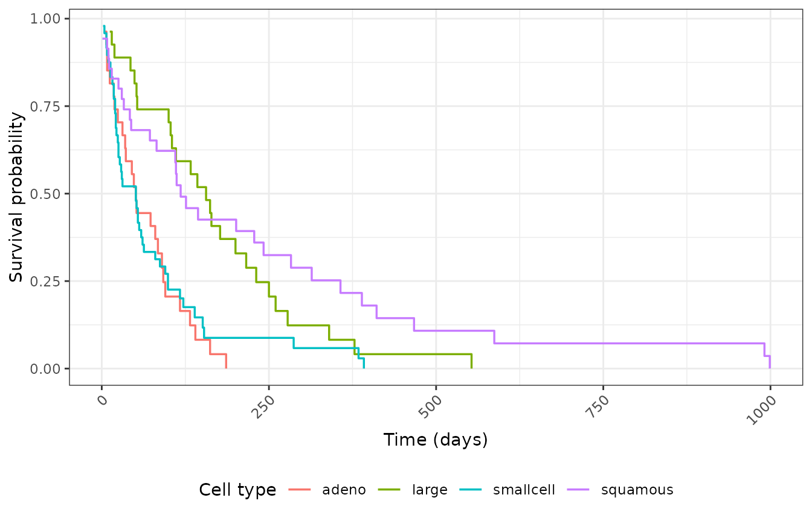
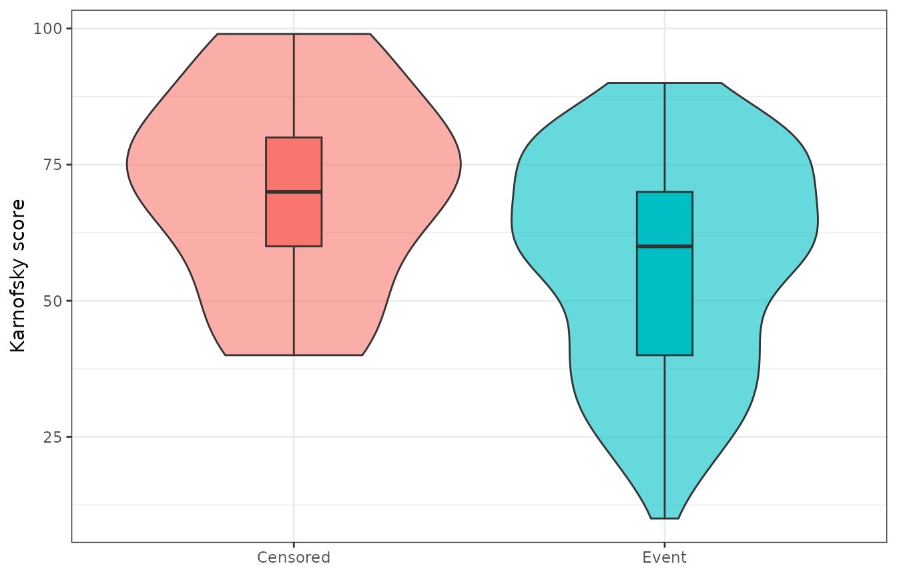
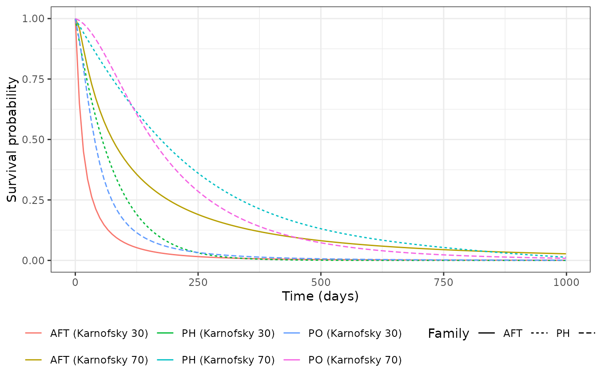

spsurv implements three standard survival regression
frameworks under one likelihood and syntax:
| Family | Function | Covariate effect | Typical interpretation |
|---|---|---|---|
| PH | bpph() |
Multiplicative on hazard | Hazard ratio |
| PO | bppo() |
Multiplicative on cumulative odds | Odds ratio |
| AFT | bpaft() |
Additive on log-time scale | Time ratio |
Before you model
library(spsurv)
library(survival)
library(ggplot2)
data(veteran)
veteran$celltype <- factor(veteran$celltype)
km_ct <- survfit(Surv(time, status) ~ celltype, data = veteran)
km_long <- data.frame(
time = km_ct$time,
surv = km_ct$surv,
celltype = rep(levels(veteran$celltype), km_ct$strata)
)
ggplot(km_long, aes(x = time, y = surv, color = celltype)) +
geom_step(linewidth = 0.6) +
labs(x = "Time (days)", y = "Survival probability", color = "Cell type") +
theme_bw() +
theme(legend.position = "bottom", axis.text.x = element_text(angle = 45, hjust = 1))
Kaplan-Meier by cell type.
ggplot(veteran, aes(x = factor(status), y = karno, fill = factor(status))) +
geom_violin(alpha = 0.6) +
geom_boxplot(width = 0.15, outlier.alpha = 0.4) +
scale_x_discrete(labels = c("Censored", "Event")) +
labs(x = NULL, y = "Karnofsky score", fill = NULL) +
theme_bw() +
theme(legend.position = "none")
Karnofsky score by event status.
The paper examples sometimes restrict to prior == 0; we
use the full veteran dataset here for simplicity.
Fit and summarize
fml <- Surv(time, status) ~ karno + celltype
deg <- 5L
fit_ph <- bpph(fml, degree = deg, data = veteran, approach = "mle", init = 0)
fit_po <- bppo(fml, degree = deg, data = veteran, approach = "mle", init = 0)
fit_aft <- bpaft(fml, degree = 3, data = veteran, approach = "mle", init = 0)AFT uses degree = 3 here so the Bernstein
gamma block stays numerically stable on veteran; PH and PO
use degree = 5. The overlay below plots point
estimates of survival; when
gamma_information_stable is FALSE, bands are
still computed but survfit() warns that they may be
unreliable.
Visual check — survival overlay
Same covariate profiles under PH, PO, and AFT:
newdata <- data.frame(karno = c(30, 70), celltype = "squamous")
plot_times <- seq(0, max(veteran$time), length.out = 121)
pr_ph <- predict(fit_ph, newdata = newdata, times = plot_times)
pr_po <- predict(fit_po, newdata = newdata, times = plot_times)
pr_aft <- predict(fit_aft, newdata = newdata, times = plot_times)
pr_ph$family <- "PH"
pr_po$family <- "PO"
pr_aft$family <- "AFT"
pr_all <- rbind(pr_ph, pr_po, pr_aft)
pr_all$label <- paste0(
pr_all$family, " (Karnofsky ",
newdata$karno[match(as.character(pr_all$id), as.character(seq_len(nrow(newdata))))],
")"
)
ggplot(pr_all, aes(x = time, y = surv, color = label, linetype = family)) +
geom_line(linewidth = 0.5) +
labs(x = "Time (days)", y = "Survival probability", color = NULL, linetype = "Family") +
theme_bw() +
theme(legend.position = "bottom")
Predicted survival: PH vs PO vs AFT (Karnofsky 30 and 70, squamous).
aic_tbl <- data.frame(
model = c("PH", "PO", "AFT"),
AIC = c(AIC(fit_ph), AIC(fit_po), AIC(fit_aft))
)
aic_tbl
#> model AIC
#> 1 PH 1450.026
#> 2 PO 1438.685
#> 3 AFT 1464.954